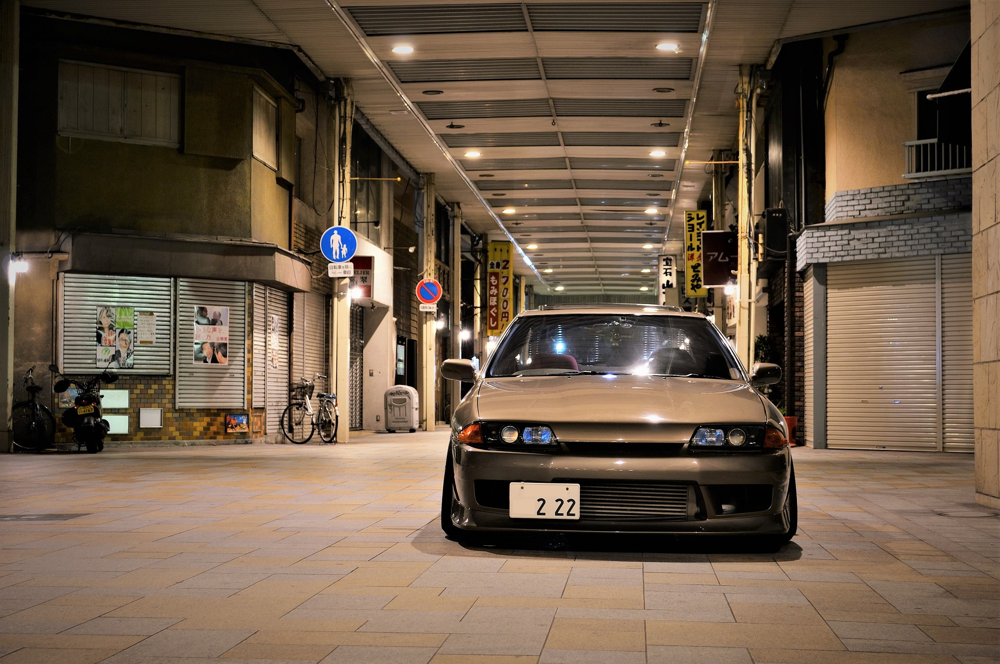

Úvod do JDM:
JDM (Japanese Domestic Market) automobily jsou japonské automobily, které byly určeny původně pro japonský trh. Tyto automobily se vyznačují vysokou kvalitou, výkonem a inovativními technologiemi. JDM automobily se staly symbolem japonského automobilového průmyslu a zároveň představují jedinečnou kulturu a historii Japonska. JDM automobily se staly velmi populárními mezi fanoušky automobilů po celém světě kvůli svému výkonu, stylovému vzhledu a jedinečným technologiím. Tyto automobily jsou oblíbené mezi tunningovými nadšenci, kteří si je upravují a personalizují podle svých představ. JDM automobily se staly neoddělitelnou součástí automobilového světa a jsou nadále jedním z nejpopulárnějších a nejrespektovanějších typů automobilů na trhu.

Nejpopulárnější modely JDM:
Japonský automobilový trh je plný skvělých modelů, ale některé z nich se staly výjimečnými a velmi oblíbenými mezi fanoušky JDM. Zde je seznam některých z nejpopulárnějších modelů JDM:
- Nissan Skyline: Tato legenda JDM automobilového světa se stala ikonou tuningové kultury a je známa svým vysokým výkonem a elegantním designem.
- Mitsubishi Lancer Evolution: Toto rally-inspired auto je známé svým agresivním vzhledem a silným výkonem.
- Subaru Impreza WRX: Toto auto se stalo kultovním mezi fanoušky rally a je známé svým skvělým výkonem a schopností na sněhu a blátě.
- Toyota Supra Toto auto je jednou z nejznámějších a nejpopulárnějších značek JDM a je známé svým vysokým výkonem a nezapomenutelným designem.
- Mazda RX-7: Toto auto je známé svým unikátním rotačním motorem a skvělým výkonem.